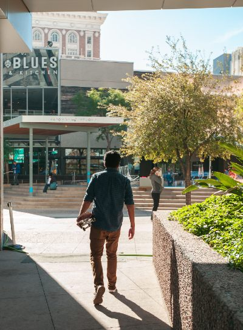
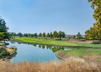
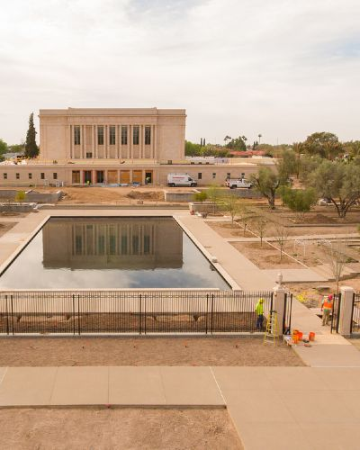
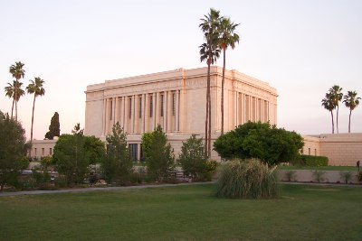

Welcome to Mesa
Mesa: A rich heritage
As a resident of Mesa, Az, I'm proud of our rich heritage. Mesa was founded in 1878 by Daniel Webster Jones, a pioneer member of The Church of Jesus Christ of Latter-Day Saints. The first settlement was located in Lehi, in North Mesa. When Mesa was first registered as town it was only one square mile of land. Now Mesa is the third largest city in Arizona with a population of over 500,000 and close to 140 sq miles. Mesa residents enjoy sunshine all year round and gorgeous views of the superstition mountains. Mesa has a booming economy and is the ideal place for entrepreneurs!
Local Events

Riverview plaza in west Mesa is the place to visit, with over $2.1 million recently approved to upgrade not only the park and lake, but also the baseball complex and outdoor shopping center! Join us for the grand opening of 6 new locally owned businesses and the brand new splash-pad in the park! It will be an exciting day for the whole family! April 12th from 8am to 9pm - 857 N Dobson Rd, Mesa, AZ 85201

Volunteers all over Mesa are gathering for the 12th annual food rescue and distribution day on May 1st at the Hillsong Community Church on 655 E University Dr, Mesa, AZ 85203. Willing volunteers are asked to bring gloves and arrive at 6:30am to help unload and organize the food donation.
Updates on the Renovation
If you drive down Mesa Drive the scenery may seem unfamiliar to you. Many hours and resources have been to The Grove on Main Townhomes and Apartments. The Grove boasts gorgeous pool and spa, a 2 story fitness center, and a direct-access parking garage. The historic Mesa Temple also underwent several renovations making the downtown Mesa area breathtaking! Newly paved roads and sidewalks are the cherry on top! All of the renovations are boosting Mesa's leading economy even more and bringing in business to the shops in downtown Mesa that struggled with COVID-19 last year. Things are looking great! Come see the changes!
Priceless: History preserved
 The historic Mesa, AZ temple is almost 95 years old. Many necessary renovations were needed and it was announced that the temple would close for a two year restoration with several major projects planned for interior and exterior of the temple. Before the temple grounds closed to the public, six skilled photographers came to capture the temple before all the changes happened. These photos are priceless to members of the community who have special connections to the historic edifice, many of whom were married there and even have parents and grandparents who were also married there. These local citizens cherish the last photo's and look forward to when the temple will re-open.
Chamber members are eligible to advertise here!
Join today!